El Salvador Digital y Próspero
Estudio de oportunidades y portafolio de proyectos tecnológicos, de recaudación, movilidad, energía y servicios para el Gobierno de la República de El Salvador
| Este documento es una propuesta para consideración de las autoridades nacionales y municipales, a quienes corresponde decidir la adopción, el alcance y la forma de cada proyecto. Se basa en fuentes públicas; las cifras fiscales y operativas internas deben validarse con las dependencias antes de cualquier decisión. |
Resumen Ejecutivo
Tres realidades que conectan: la penal, la económica y la digital
| El Salvador combina hoy tres realidades que esta propuesta busca conectar: una población penitenciaria sin precedentes (118,369 personas para unas 30,864 plazas, según el IDHUCA vía EFE, junio de 2026), una economía en crecimiento (4.5% proyectado por el FMI para 2026) con un turismo y unas remesas en máximos históricos, y un Estado que ya tiene bases digitales como la factura electrónica, la firma electrónica certificada y el DUI, pero que aún puede llevar esos servicios a más personas y a más trámites. |
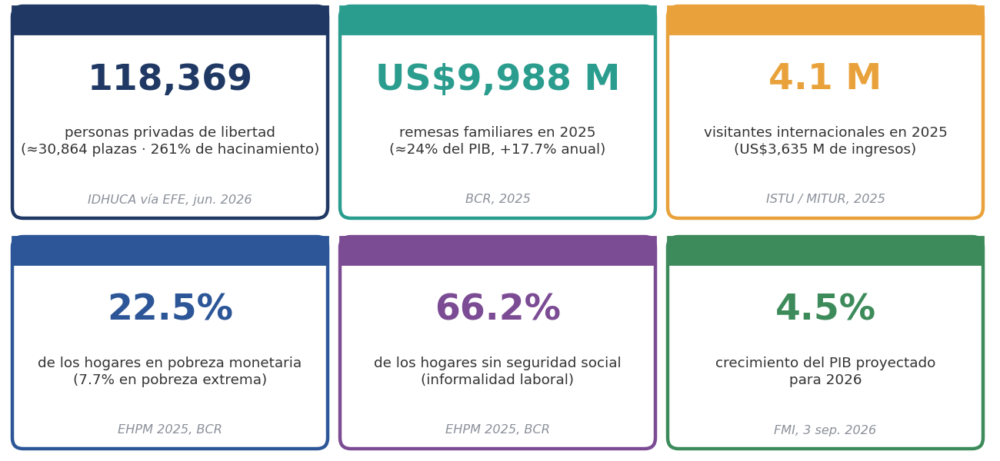
| Eje | Proyectos |
|---|---|
| 1. Seguridad y justicia | P1 Gestión penitenciaria y expediente digital · P2 Trabajo con Propósito · P3 Educación, credenciales y empleo |
| 2. Gobierno digital y recaudación | P4 Inteligencia fiscal DTE · P5 Ventanilla única, app y pagos · P6 Registro, catastro y escritura · P7 Licencias digitales · P8 Plataforma municipal |
| 3. Economía local y turismo | P9 Red comunitaria de pago y servicios · P10 Pase turístico y app del turista |
| 4. Movilidad | P11 Cobro electrónico · P12 Corredores troncales (APP) · P13 Tráfico y seguridad vial |
| 5. Agua, energía y conectividad | P16 Internet comunitario · P19 Parque industrial geotérmico |
| 6. Calidad de vida | P17 Salud digital · P18 Alerta temprana y ciudad segura |
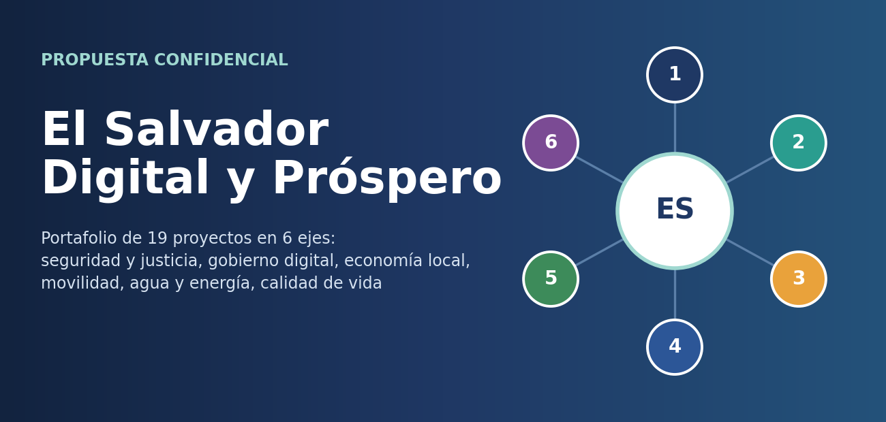
| Se propone un portafolio de 19 proyectos en seis ejes, con un modelo financiero en el que la mayor parte de los equipos y plataformas se paga con comisiones, ahorros compartidos o concesiones, y no con presupuesto inicial. Esto es relevante porque el programa con el FMI condiciona la consolidación fiscal, la transparencia y las reformas de pensiones. |
| Recomendación: iniciar con un paquete de arranque de 100 días (P1 y P2 en un centro penal, P5 con pocos trámites, P7 licencia digital y alianzas para P10), que da resultados visibles y medibles con riesgo acotado, y que prepara los proyectos de mayor inversión: P6, P12 y P19. La sección 7.3 muestra cómo reducir el costo neto del sistema penitenciario. |
Alcance y Metodología
Cuatro pasos del estudio y limitaciones declaradas
| El estudio se elaboró con información pública oficial, académica y periodística consultada en octubre de 2026, y con la experiencia del equipo en proyectos de software para instituciones públicas, pagos y energía solar. Siguió cuatro pasos: (1) revisión del contexto institucional; (2) diagnóstico de condiciones sociales, fiscales y operativas; (3) revisión de plataformas y marco normativo existentes; y (4) construcción de un portafolio con su lógica económica, modelo de contratación y hoja de ruta. |
| No se tuvo acceso a datos internos de recaudación, padrones, presupuestos ni contratos vigentes; las estimaciones económicas son escalas y escenarios de trabajo, no pronósticos. |
| Algunas cifras provienen de declaraciones previas (por ejemplo, el costo penitenciario de unos US$150 millones anuales expresado en 2024) y deben actualizarse. |
| Varios datos de prensa, como el desmontaje de las estaciones del SITRAMSS, deben confirmarse con la autoridad competente. |
| El Anexo A propone un cuestionario para completar el sondeo con cada dependencia. |
Diagnóstico del País
Sistema penitenciario, condiciones sociales y económicas, finanzas y FMI, gobierno digital, movilidad, agua y energía
| El IDHUCA estima 118,369 personas privadas de libertad al cierre de 2025 y una tasa de 1,963 por cada 100,000 habitantes. El CECOT, con capacidad nominal de 40,000, tenía ocupado el 36%. Incluso con el CECOT lleno, la ocupación sería de unos 167%, por lo que, en palabras del informe, el problema “no es coyuntural, ni se resuelve únicamente con infraestructura”. |
| El Ejecutivo ya ha dado señales de interés en el trabajo penitenciario: en 2024 anunció la capacitación de miles de reclusos y un taller textil con unos 5,400 internos para 2.4 millones de uniformes escolares. Esto muestra voluntad política y una demanda estatal que puede ordenarse y medirse. Al mismo tiempo, organizaciones de derechos humanos han señalado preocupaciones sobre las condiciones de reclusión y el debido proceso, por lo que todo proyecto con población privada de libertad debe diseñarse con estándares internacionales verificables (sección 11). |
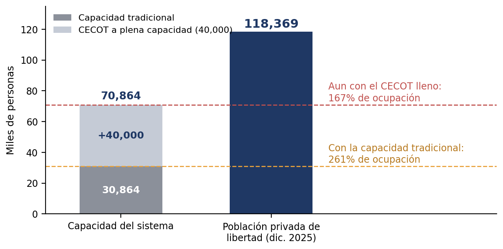
| La encuesta de hogares 2025 muestra una mejora: la pobreza multidimensional bajó de 21.1% a 20.1% y 262,405 personas salieron de la pobreza. Aun así, el 66.2% de los hogares no tiene seguridad social y el subempleo es el problema más frecuente en los hogares con carencias. Esto implica que las soluciones deben incluir acceso asistido, puntos de atención en el comercio de barrio y uso de celular básico, y no solo aplicaciones para población conectada. |
| Las remesas alcanzaron US$9,988 millones en 2025 (17.7% más que en 2024; entre 24% y 27% del PIB según la medición), con 92.4% originadas en Estados Unidos. Representan la principal fuente de divisas y una oportunidad para canalizar pagos, ahorro y crédito mediante la red comunitaria (P9). En paralelo, el turismo cerró 2025 con 4.1 millones de visitantes y US$3,635 millones de ingresos. |
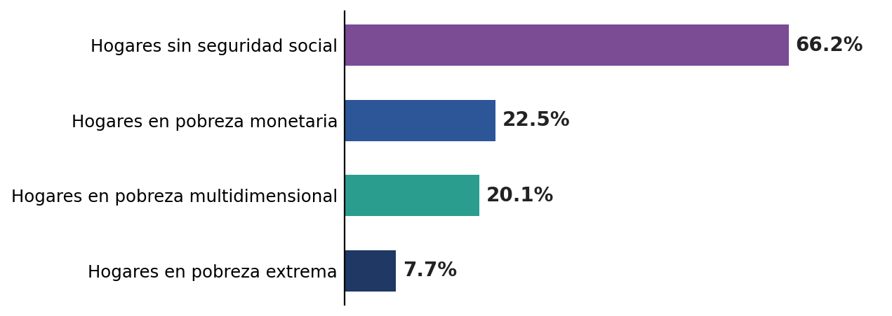
| El FMI alcanzó el 3 de septiembre de 2026 un acuerdo técnico sobre la segunda y tercera revisión del programa y proyecta un crecimiento de 4.5% para 2026, con condiciones de consolidación fiscal, reforma de pensiones, transparencia y ajustes relacionados con Bitcoin y la billetera Chivo. Implicación de diseño: los proyectos deben ser fiscalmente neutros o positivos y financiables con concesiones, APP, contratos de energía o ahorros compartidos. |
| Facturación electrónica (DTE): obligatoria para contribuyentes de IVA, con transmisión en tiempo real a Hacienda. La normativa DTE 2.0 exige adaptar las soluciones antes del 1 de diciembre de 2026. |
| Firma electrónica certificada: disponible en línea mediante el Banco Central de Reserva, con validez equivalente a la firma manuscrita. |
| Identidad: el DUI es el ancla natural para credenciales, licencias y servicios. |
| Pagos digitales: existe experiencia con billeteras y bitcoin que el programa con el FMI busca ordenar; conviene diseñar una pasarela interoperable de propósito general. |
| El transporte colectivo sigue operado por concesionarios privados de rutas. El SITRAMSS está inactivo desde 2020 y, según reportes de octubre de 2026, sus estaciones se desmontan. El artículo 52 de la ley de transporte exige cobro electrónico, gobernador de velocidad y cámaras, y la Asamblea aprobó un préstamo BID de US$60 millones para cobro electrónico y seguridad vial. El intento anterior (tarjeta SUBES) falló por problemas técnicos y de adopción, lo que exige un diseño centrado en usuarios y operadores. |
| La geotermia es una ventaja competitiva: el país tiene 217 MW instalados, LaGeo proyecta llegar a unos 347 MW hacia 2030 y el Banco Mundial aprobó US$150 millones para ampliar generación y usos directos del calor (P19). El consumo eléctrico del bombeo y del alumbrado suele ser uno de los mayores gastos de los operadores de agua y de los municipios. Los datos de pérdidas, cartera vencida y consumo deben levantarse con ANDA, las juntas de agua y los municipios (Anexo A), por lo que las cifras del sector son escalas de trabajo. |
Arquitectura de la Propuesta
Un ecosistema de 19 proyectos que giran alrededor de la red comunitaria
| El portafolio funciona como un ecosistema: la red comunitaria de pago y servicios (tiendas, pupuserías y agentes) es la puerta de entrada de pagos, recargas, remesas y servicios en cada colonia y comunidad, y se conecta con el transporte, el agua y la luz, los trámites, la proveeduría local, el crédito, el turismo y el internet comunitario. |
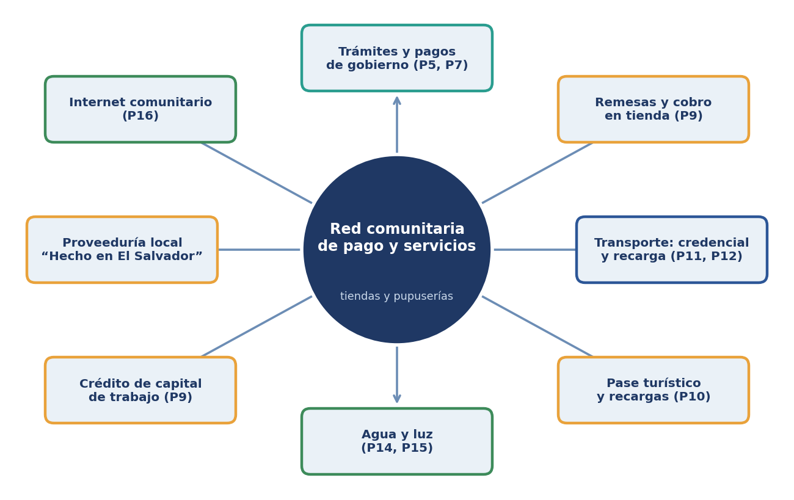
| Financiamiento por comisión, ahorro y concesión | Para que equipos y plataformas no representen gasto inicial del Estado |
| Transición gradual | Con efectivo y atención asistida mientras crece la adopción digital |
| Medición desde el inicio | Con línea base e indicadores públicos para cada proyecto |
| Dignidad y voluntariedad | Para P1 a P3, un cuarto principio: en todo trabajo y capacitación penitenciaria |
Mapa de Oportunidades
Contribución de cada proyecto a los cuatro objetivos de la propuesta
| La figura muestra la contribución de cada proyecto a los objetivos de la propuesta: aumentar la economía, aumentar la recaudación, mejorar la calidad de vida y fortalecer la imagen del gobierno. Es una valoración cualitativa del equipo, sujeta a validación con datos oficiales. |
| Eco- nomía |
Recau- dación |
Calidad de vida |
Imagen de gobierno |
|
|---|---|---|---|---|
| P1 · Gestión penitenciaria y expediente digital | Alta | Baja | Media | Alta |
| P2 · Trabajo con Propósito | Muy alta | Media | Alta | Muy alta |
| P3 · Educación, credenciales y empleo | Media | Baja | Alta | Media |
| P4 · Inteligencia fiscal sobre DTE | Media | Muy alta | Baja | Media |
| P5 · Ventanilla única, app y pagos | Media | Alta | Alta | Muy alta |
| P6 · Registro, catastro y escritura digital | Alta | Alta | Alta | Media |
| P7 · Licencias y credenciales digitales | Media | Alta | Media | Alta |
| P8 · Plataforma municipal integral | Media | Alta | Media | Alta |
| P9 · Red comunitaria de pago y servicios | Muy alta | Alta | Alta | Alta |
| P10 · Pase turístico y app del turista | Muy alta | Media | Media | Muy alta |
| P11 · Cobro electrónico en transporte | Media | Alta | Alta | Alta |
| P12 · Corredores troncales (APP) | Alta | Alta | Muy alta | Muy alta |
| P13 · Tráfico y seguridad vial | Media | Media | Alta | Alta |
| P16 · Internet comunitario satelital | Alta | Baja | Alta | Alta |
| P17 · Salud digital | Media | Baja | Muy alta | Alta |
| P18 · Alerta temprana y ciudad segura | Baja | Baja | Muy alta | Muy alta |
| P19 · Parque industrial geotérmico | Muy alta | Alta | Media | Muy alta |
Portafolio de Proyectos P1 – P19
Fichas completas organizadas por eje: problema, solución, impacto, modelo de contratación, piloto, indicadores y riesgos
| Código de color | Significado |
|---|---|
| Franja de color del encabezado | Eje temático del proyecto |
| Ola 1, 2 o 3 | Momento sugerido de arranque (sección 9) |
| Escala de inversión | Cualitativa: Baja (menos de US$2 millones) · Media (US$2 a 10 millones) · Alta (más de US$10 millones). Los costos reales dependen de la infraestructura existente y de las especificaciones que defina el Gobierno |
Eje 1 · Seguridad y justicia
De la contención al trabajo, la educación y la reinserción (P1, P2, P3)
Eje 2 · Gobierno digital y recaudación
Del DTE a la ventanilla única, el registro, las licencias y el municipio (P4–P8)
Eje 3 · Economía local y turismo
La tienda de barrio conectada y el pase turístico (P9, P10)
Eje 4 · Movilidad
Cobro electrónico, corredores troncales y tráfico inteligente (P11–P13)
Eje 5 · Agua, energía y conectividad
Internet comunitario y geotermia (P16, P19)
Eje 6 · Calidad de vida
Salud digital y alerta temprana (P17, P18)
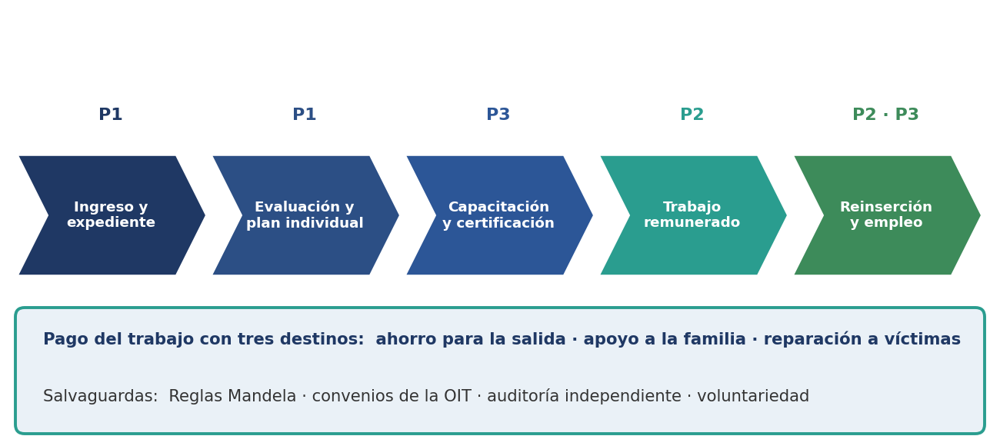
Palancas de Recaudación y Lógica Económica
Cuatro mecanismos: ampliar la base, elevar el cumplimiento, reducir costos y fugas, y crear ingresos por servicios o concesiones
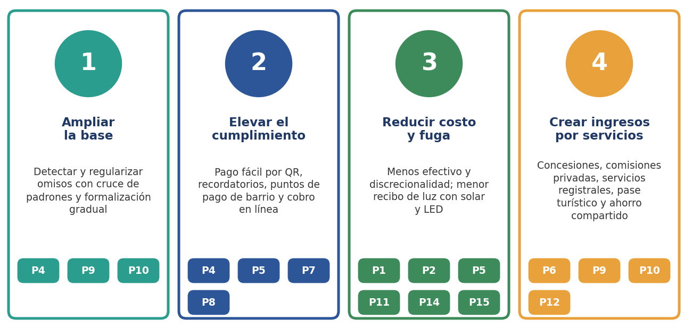
| Para cada concepto de ingreso: incremento = recaudación base × (cumplimiento objetivo − cumplimiento actual) + ingresos por nuevos servicios − costo del proyecto. Como referencia, se proponen tres escenarios sobre la base de ingresos propios digitalizable, sujetos a validación con datos de Hacienda y alineados con el rango que el BID asocia a la facturación electrónica (hasta 6%). |
| Escenario | Mejora sobre la base digitalizada | Lectura |
|---|---|---|
| Conservador | +3% | Solo mejora de cobro y menor fuga en trámites digitalizados |
| Base | +6% | Incluye regularización de omisos y puntos de pago de barrio |
| Ambicioso | +10% | Suma formalización, concesiones nuevas y registro y catastro actualizados |
| Estos porcentajes son hipótesis de trabajo y no una proyección. El primer entregable debe ser una línea base con datos reales. |
| Como el equipo se entrega sin costo y se financia con comisiones, la clave es el volumen de operaciones por comercio. La figura muestra cuántos meses tarda en recuperarse un equipo según su costo y las operaciones diarias, con un supuesto ilustrativo de US$0.05 de comisión por operación. |
| Lectura: con 40 operaciones diarias y un equipo de US$150, la recuperación toma unos 2.5 meses; con 15 operaciones, cerca de 7. Por eso se recomienda entregar el equipo en comodato con un mínimo mensual de operaciones, con posibilidad de retirarlo si el comercio no lo usa, y comenzar por las zonas de mayor tráfico. |
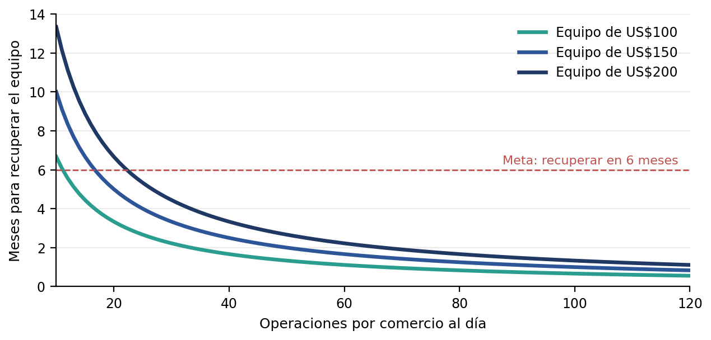
| Entendemos “hacer rentables las prisiones” como reducir el costo neto por persona y generar ingresos para el Estado, sin convertir a las personas privadas de libertad en una fuente de lucro. El Ejecutivo expresó en 2024 un costo anual cercano a US$150 millones, que equivale a más de US$1,200 por persona al año si se divide entre la población de 2025 (cálculo indicativo, por actualizar con el presupuesto vigente). La métrica central es: costo neto = costo operativo − ahorros − ingresos netos del Estado. |
| Palanca | Cómo funciona | Proyectos | Tipo |
|---|---|---|---|
| Autoabastecimiento interno | Huertos, agroindustria, panadería, lavandería, uniformes, mobiliario y mantenimiento producidos dentro del sistema | P2 | Ahorro |
| Producción para compras públicas | Uniformes, mobiliario escolar y hospitalario y prefabricados con contratos marco y estándares de calidad | P2 | Ingreso y ahorro |
| Servicios a terceros | Reciclaje, ensamblaje, reparación de electrónicos, digitalización de archivos no sensibles y maquila para clientes privados | P2 | Ingreso |
| Eficiencia procesal y digital | Audiencias virtuales, menos traslados y expedientes al día para que cada plaza se ocupe solo el tiempo legalmente debido | P1 | Ahorro |
| Salud y logística | Compras agregadas, inventario de medicamentos y telemedicina | P1, P17 | Ahorro |
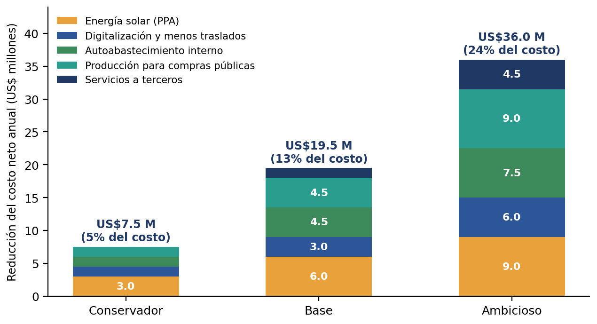
| Para que el modelo sea justo y financiable, el margen de cada taller debe repartirse por regla y de forma auditable entre: el pago al interno, el ahorro para su salida, el apoyo a su familia, la reparación a víctimas y el Estado u operador. Las proporciones deben definirse en la normativa. |
| No recomendamos cobrar tarifas elevadas a las familias (llamadas, visitas, comisariato), pagar a contratistas por plazas ocupadas, imponer trabajo ni exhibir a personas privadas de libertad como atractivo turístico. La experiencia internacional con pagos por ocupación crea incentivos para mantener llenas las plazas y distorsiona decisiones judiciales, además de dañar la reputación y el acceso a financiamiento multilateral. |
| Se evaluaron tres ideas propuestas para ampliar los ingresos del sistema. Cada una se califica por su viabilidad y por las condiciones que la harían defendible ante la ciudadanía, los tribunales y los financiadores. |
| Idea | Qué es | Viabilidad | Condiciones y riesgos |
|---|---|---|---|
| Contenido y obra creativa | Música, arte, artesanía con marca propia, escritura, audiolibros, cursos de oficios dictados por internos capacitados, ilustración, doblaje y subtitulado | Media a alta | Consentimiento informado y revocable; sin exhibir víctimas ni glorificar delitos; sin convertir a las personas en espectáculo; reparto de ingresos por regla (víctimas, ahorro de salida, familia); derechos de autor y control de acceso a redes |
| Trabajo digital remoto en red controlada | Etiquetado de datos para IA, transcripción, traducción, revisión de documentos y digitalización de archivos no sensibles, para clientes públicos y privados | Media a alta | Red cerrada y monitoreada; solo datos no sensibles; pago justo (programas piloto en otros países fueron criticados por salarios bajos); contratos con cláusulas de confidencialidad y auditoría |
| Alojar personas condenadas de otros países | Arrendar plazas a otro Estado para personas con sentencia firme, bajo tratado, con estándares del país que paga y supervisión independiente | Media | Requiere tratado y ley de ejecución penal; preferible con consentimiento del trasladado; inspección externa de derechos humanos; separación de la población salvadoreña; ingresos brutos = plazas × tarifa, antes de costos de personal, salud, seguridad y supervisión |
| Alojar personas deportadas o sin condena | Modelo reportado desde marzo de 2025 con Estados Unidos, que prensa y documentos judiciales vinculan a un pago de unos US$20,000 anuales por persona | Baja; no recomendado | Ha sido objeto de demandas y críticas de organizaciones de derechos humanos; el contrato no es público; riesgos de derecho internacional, reputación y de relación con el FMI y los bancos multilaterales |
| Existen precedentes de arrendamiento de plazas entre Estados europeos, como Países Bajos con Noruega (cárcel de Norgerhaven) y con Bélgica (Tilburg), donde se trasladó a condenados con sentencia firme y se aplicaron los estándares del país emisor. |
| Incorporar al programa P2 el contenido creativo y el trabajo digital remoto (Ola 2), ambos con las salvaguardas de la sección 11. Estudiar el alojamiento de condenados de otros países como línea de largo plazo (Ola 3), solo con tratado, estándares verificables y supervisión independiente. Mantener fuera de la propuesta el alojamiento de personas sin condena. |
Esquemas de Contratación y Marco Jurídico
La modalidad se elige proyecto por proyecto con revisión jurídica
| Modalidad | Cuándo conviene | Consideraciones |
|---|---|---|
| Contrato de servicios / licencia (SaaS) | Plataformas como ventanilla, app, licencias y gestión penitenciaria (P1, P3, P5, P6, P7) | Implementación rápida y costo predecible; resguardar la propiedad estatal de los datos |
| Comisión privada por operación | Red comunitaria, recaudo de transporte y pase turístico (P5, P9, P10, P11) | No genera gasto al gobierno; requiere convenio, tarifas topadas y niveles de servicio |
| Ahorro o ingreso compartido | Fiscal, agua y plataforma municipal (P4, P8) | El pago depende del resultado verificado; requiere línea base y auditoría independiente |
| Concesión o APP/BOT | Corredores troncales y tráfico (P12, P13, P19) | Requiere estudio de viabilidad, procedimiento y revisión de la ley aplicable |
| Contrato de compra de energía (PPA) | Generación geotérmica (P19) | Estado paga por kWh; tarifa menor a la actual y plazo de 15 a 20 años |
| Contrato marco de compras públicas | Bienes producidos en los talleres penitenciarios (P2) | Demanda cautiva con estándares de calidad y trazabilidad |
| Financiamiento multilateral | Movilidad, salud y resiliencia (P11, P12, P17, P18, P19) | BID, BCIE y Banco Mundial; el BID anunció US$1,300 millones para vivienda y turismo en 2026 |
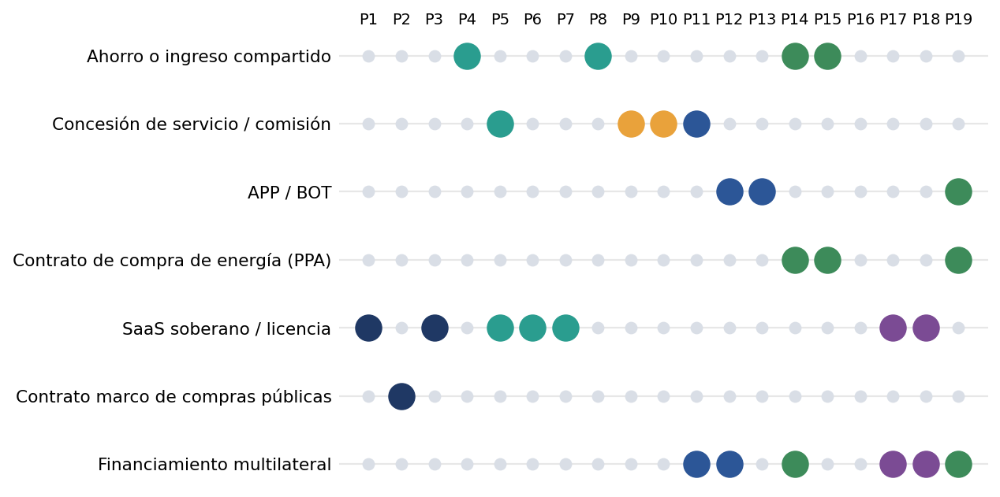
| Ley de Compras Públicas, ley de asocios público-privados y normas de contratación y transparencia. |
| Código Tributario y normativa de facturación electrónica (DTE 2.0); Ministerio de Hacienda. |
| Ley de firma electrónica y normativa del BCR y del Ministerio de Economía. |
| Normativa penitenciaria y de ejecución de la pena; Reglas Mandela y convenios de la OIT sobre trabajo forzoso. |
| Ley de transporte (artículo 52) y reglamentos del Viceministerio de Transporte; concesiones de rutas. |
| Marco registral y catastral (CNR) y legislación del notariado. |
| Marco del agua potable (ANDA y operadores locales) y del sector eléctrico y de telecomunicaciones (SIGET). |
| Normativa financiera aplicable a pagos, agentes y comisiones (BCR y supervisión financiera); conviene operar con un banco aliado titular de los fondos. |
| Reglas de endeudamiento municipal y de deuda pública, y protección de datos personales y ciberseguridad. |
Priorización y Hoja de Ruta
Tres olas: arranque visible, consolidación y transformación
| Se propone ejecutar en tres olas. La Ola 1 reúne proyectos de bajo riesgo y resultados visibles; la Ola 2 consolida los que requieren integración de datos y coordinación; la Ola 3 agrupa los de mayor inversión y complejidad, apoyados en lo ya construido. |
Arranque visible
0 a 6 meses · P1, P2, P5, P7, P10 (piloto o diseño)
- Bajo riesgo, resultados medibles y de fácil comunicación
Consolidación
6 a 18 meses · P3, P4, P8, P9, P11, P13, P18
- Requieren integración de datos y coordinación entre dependencias y municipios
Transformación
12 a 36 meses · P6, P12, P16, P17, P19
- Mayor inversión y complejidad; se apoyan en recaudo, pagos y datos de las olas previas
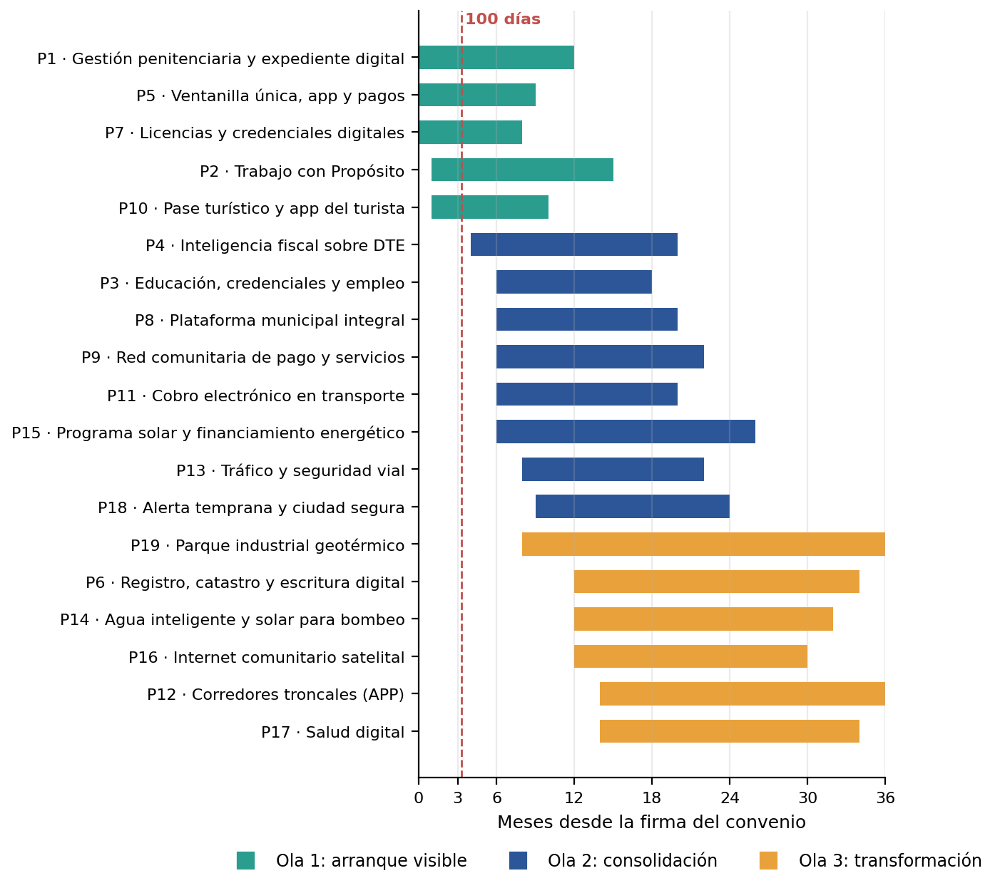
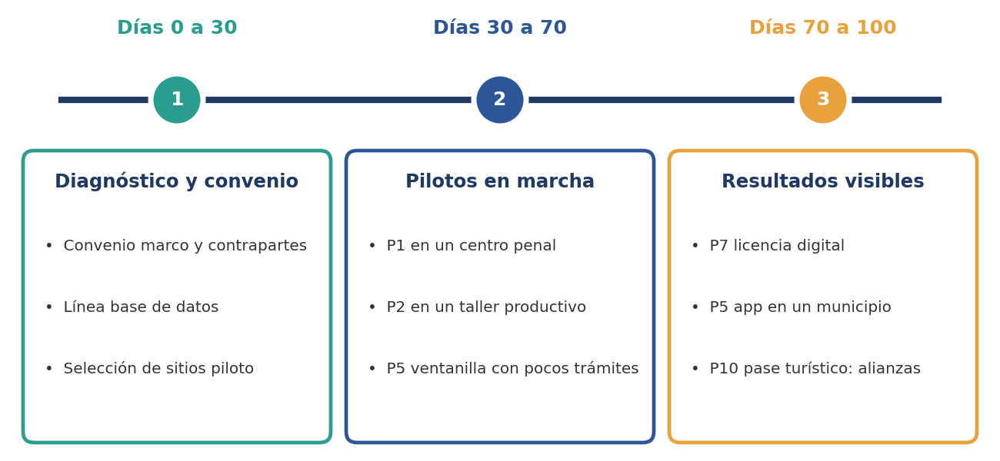
Socio Estratégico: Grupo CSI
Capacidades que el gobierno suele exigir antes de contratar
| Grupo CSI se presenta como una empresa de identidad digital, contact center y software para banca y gobierno, que opera mediante tres unidades (ART, Inovitz y Buzzword) y ofrece verificación de identidad, contact center omnicanal, fábrica de software, mesa de ayuda y gestión documental. Su perfil complementa al equipo proponente en tres frentes que el gobierno suele exigir antes de contratar: capacidad operativa a escala, experiencia con instituciones reguladas y respaldo corporativo |
| Capacidad | Proyectos donde aporta | Qué resuelve |
|---|---|---|
| Verificación de identidad | P1, P3, P5, P6, P7, P9 | Altas confiables en expedientes penitenciarios, credenciales del DUI, licencias y usuarios de la ventanilla única; menos fraude |
| Contact center omnicanal | P2, P5, P10, P11 | Apoyo a órdenes de trabajo, atención ciudadana de la app de gobierno, afiliación del pase turístico y soporte del recaudo de transporte |
| Fábrica de software | P4, P5, P6, P8, P12 | Plataformas fiscales DTE, ventanilla única, registro y catastro, módulos municipales e integraciones con sistemas de Hacienda y municipios |
| Mesa de ayuda | Todos | Soporte a usuarios internos, notarios, comercios de la red comunitaria, operadores de transporte y personal de los centros penales |
| Gestión documental | P1, P6, P17 | Digitalización de expedientes penitenciarios del acervo registral del CNR y de archivos clínicos |
| Relación con banca | P9, P6 | Banco aliado titular de los fondos de la red comunitaria, remesas e interoperabilidad con billeteras existentes |
| [Insertar aquí casos de referencia, certificaciones y datos de contacto institucionales de Grupo CSI antes de enviar.] |
Valor Institucional
Más allá del beneficio económico, el portafolio ofrece al Ejecutivo cuatro resultados institucionales
| Mensaje | Qué significa |
|---|---|
| Resultados visibles en 100 días | Pilotos con indicadores públicos que permiten comunicar avances concretos |
| Ingresos propios sin nuevos impuestos | Mayor cumplimiento, menos fuga y nuevos servicios, con un modelo fiscalmente neutro |
| Un reto convertido en programa | La carga penitenciaria se orienta a trabajo, capacitación y reinserción con metas medibles y auditoría |
| Modernización con inclusión | Servicios digitales con acceso asistido para quienes no tienen celular, tarjeta o conectividad |
Riesgos y Salvaguardas
Estándares para el trabajo penitenciario y matriz de riesgos con mitigación concreta
| Para que P1 a P3 sean sostenibles y financiables, recomendamos adoptar como mínimo los siguientes principios, alineados con las Reglas Mandela (reglas 96 a 103) y los convenios fundamentales de la OIT sobre trabajo forzoso: |
| Voluntariedad: el trabajo no puede imponerse como castigo ni condicionar derechos básicos |
| Remuneración equitativa y documentada, con un porcentaje para ahorro de salida, apoyo familiar y reparación a víctimas |
| Seguridad y salud en el trabajo: equipo de protección, capacitación y seguro de riesgos |
| Utilidad para la reinserción: oficios con demanda real y certificación reconocida |
| Supervisión independiente: auditorías periódicas y mecanismos de queja |
| Trazabilidad de la cadena de suministro: indispensable si los productos se exportan, ya que algunos mercados, como Estados Unidos, restringen bienes hechos con trabajo forzoso |
| Riesgo | Probabilidad | Impacto | Mitigación |
|---|---|---|---|
| Cuestionamientos de derechos humanos sobre el trabajo penitenciario | Media | Alto | Diseño bajo Reglas Mandela y OIT, auditoría independiente y transparencia de resultados |
| Restricciones fiscales por el programa con el FMI | Alta | Alto | Esquemas sin inversión inicial del Estado: APP, PPA, ahorro compartido |
| Fallas de adopción tecnológica, como en el caso de SUBES | Media | Alto | Pilotos, capacitación a usuarios y operadores, soporte en campo y despliegue gradual |
| Ciberseguridad y fuga de datos sensibles | Media | Muy alto | Arquitectura segura, cifrado, segmentación, auditorías y alojamiento soberano |
| Resistencia de operadores de transporte | Alta | Medio | Integrarlos como socios y financiar la renovación de flota |
| Cumplimiento de la normativa de contratación pública | Media | Alto | Procesos competitivos o convenios con respaldo legal y asesoría jurídica desde el inicio |
| Exclusión de población sin celular, tarjeta o conectividad | Alta | Medio | Atención asistida, efectivo durante la transición y puntos en el comercio de barrio |
| Competencia o regulación de pagos y remesas | Media | Medio | Operar con banco aliado titular de fondos y interoperar con billeteras existentes |
Plan de Acercamiento y Siguientes Pasos
Cuatro etapas para avanzar con compromisos acotados y decisiones informadas
| Etapa | Acción | Resultado esperado |
|---|---|---|
| 1. Sesión de trabajo | Presentar el portafolio, priorizar proyectos y definir metas de gobierno | Lista corta de proyectos y contrapartes designadas |
| 2. Convenio marco | Firmar un memorándum para el diagnóstico, sin costo para el Estado y con acuerdos de confidencialidad | Acceso a datos y sitios para el levantamiento técnico |
| 3. Diagnóstico y línea base | Aplicar el cuestionario del Anexo A y levantar datos reales de cada dependencia | Informe de línea base y estimaciones económicas calibradas |
| 4. Pilotos de 90 a 120 días | Ejecutar P1, P2, P5, P7 y los demás pilotos aprobados, con indicadores públicos | Resultados medibles y decisión de escalamiento |
| En un máximo de 60 días presentaremos un plan de implementación detallado, con presupuesto, cronograma y estructura contractual para cada proyecto seleccionado. |
Anexos
Cuestionario de sondeo, fuentes consultadas y líneas de crecimiento futuro
| Las preguntas siguientes permiten completar el diagnóstico con información oficial. Se sugiere entregarlas con anticipación a cada contraparte. |
| Dependencia | Preguntas clave |
|---|---|
| Dirección General de Centros Penales y Ministerio de Justicia | Población por centro y situación jurídica; capacidad instalada; talleres existentes y su producción; presupuesto y costo por interno; sistemas de información vigentes; protocolos de seguridad para operadores externos |
| Ministerio de Hacienda (DGII, DGT) | Ingresos propios por concepto; avance del DTE 2.0; brecha de IVA estimada; sistemas de cobro y pago en línea; convenios con bancos |
| Centro Nacional de Registros (CNR) | Porcentaje del acervo digitalizado; tiempos de inscripción y certificación; ingresos por derechos registrales; incidentes de fraude; interoperabilidad con notarios |
| Viceministerio de Transporte | Rutas, flota y subsidios; avance del cobro electrónico y del préstamo BID; estado de las concesiones; corredores críticos de siniestralidad |
| ANDA y operadores de agua | Agua producida y facturada; pérdidas; cartera vencida; consumo eléctrico del bombeo; cobertura de medición |
| Ministerio de Turismo y CORSATUR | Flujos por destino; gasto por visitante; plataformas existentes; prestadores formalizados |
| Municipalidades y COMURES | Ingresos propios; sistemas de catastro y tasas; gasto en alumbrado y energía; capacidad de pago y endeudamiento |
| BCR, SIGET y supervisión financiera | Reglas para agentes, remesas y comisiones; cobertura de telecomunicaciones rurales; regulación de generación distribuida |
| Información pública consultada al 25 de octubre de 2026. Las cifras deben contrastarse con datos oficiales antes de su uso en procesos contractuales. |
| IDHUCA, población penitenciaria al cierre de 2025, difundido por EFE (junio de 2026) y reproducido por El Diario de Hoy y otros medios |
| Cobertura de prensa sobre el programa de capacitación y trabajo penitenciario anunciado por el Ejecutivo en 2024 (Teletica, entre otros) |
| Banco Central de Reserva: remesas 2025 y Encuesta de Hogares de Propósitos Múltiples (EHPM) 2025, reportadas por El Mundo, El Diario de Hoy y elsalvador.com |
| ISTU, MITUR y CORSATUR: visitantes e ingresos por turismo 2025 y primeros meses de 2026 |
| FMI: acuerdo técnico del 3 de septiembre de 2026 (elsalvador.com); Bloomberg Línea, febrero de 2026, sobre Bitcoin, deuda y FMI |
| Ministerio de Hacienda y EDICOM: normativa DTE 2.0; BID, efecto de la facturación electrónica en la recaudación (citado por Revista E&N) |
| Banco Central de Reserva: plataforma de firma electrónica certificada |
| elsalvador.com y The Rio Times (octubre de 2026): préstamo BID de US$60 millones, artículo 52 de la ley de transporte y estado del SITRAMSS |
| LaGeo, CEL y Banco Mundial: capacidad geotérmica, plan de expansión y financiamiento (reportados por El Mundo, Prensa Latina y El Nuevo Diario) |
| Naciones Unidas: Reglas Mandela; OIT: convenios sobre trabajo forzoso |
| Documento “Chiapas Digital y Próspero” (v4.0, octubre de 2026): estructura, modelo de red comunitaria, agua inteligente, internet comunitario, pase turístico y paquete de arranque, adaptados al contexto salvadoreño |
| Línea futura | Descripción | Proyectos base |
|---|---|---|
| Remesas productivas | Ahorro, inversión y crédito para hogares receptores, con cobro y envío en la red comunitaria | P9 |
| Seguros paramétricos agrícolas | Seguro por sequía o lluvia extrema con datos satelitales, vendido en la red comunitaria | P9, P18 |
| Trazabilidad de café y productos de exportación | Precios en tiempo real, trazabilidad por QR y certificación para exportación | P9, P10 |
| Recolección de residuos con rutas optimizadas | Rutas y contenedores con sensores y reportes desde la app | P5, P8 |
| Facturación simplificada para micronegocios | Emisión de comprobantes y cumplimiento básico desde el celular | P4, P9 |
| Servicios ambientales y monitoreo | Pago por conservación y vigilancia satelital de la deforestación | P10, P18 |
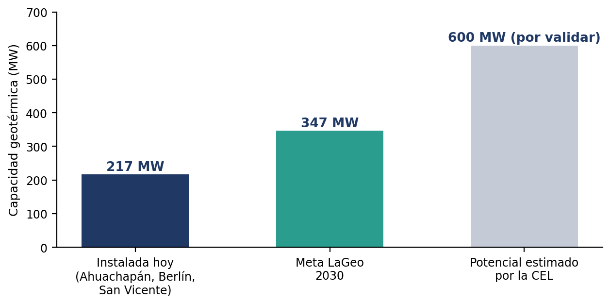
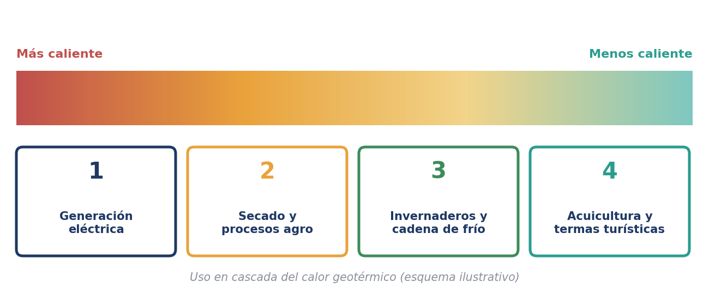